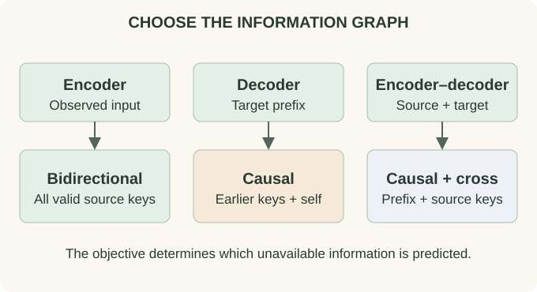

Transformer Architectures: Choose the Information Flow
Use one task for all three diagrams
Suppose the source is “the cat sleeps” and the target translation is “le chat dort.” An encoder can build source representations using the whole source. A causal decoder can predict target tokens one at a time. An encoder-decoder connects those operations through cross-attention.
A decoder-only model can also perform translation by receiving a prompt containing the source and then generating the target. Thus a task does not uniquely determine a model family. The families describe computation graphs, not mutually exclusive lists of applications.

{kind=link}
Encoder-only: contextualize an observed sequence
An encoder applies bidirectional self-attention over valid input positions, interleaved with token-wise MLPs. The representation of the middle word can depend on words to both its left and right. A task head can classify the sequence, label each position, or predict a missing token.
Bidirectional context is appropriate when those surrounding tokens are available at inference time. If the task is next-token prediction from a prefix, allowing the representation to see its target would leak the answer. The encoder chapter follows padding, pooling, and the output head in detail.
Decoder-only: contextualize a prefix
A causal decoder allows position $i$ to read positions $j\le i$. Its output at $i$ predicts the next token in a shifted language-model setup. During training, all positions can be evaluated in parallel because their input tokens are known; the mask preserves the prefix dependency.
At generation time, the next input token depends on the previous prediction, so a new token normally requires another forward step. KV caching avoids recomputing earlier layers' K/V entries but does not remove the sequential choice of future tokens. See the decoder chapter.
Encoder-decoder: two axes, three attention operations
Let the source length be $n$ and target length be $m$. Encoder self-attention is $n\times n$. Decoder causal self-attention is $m\times m$. Decoder cross-attention uses target queries and source keys/values, making an $m\times n$ score matrix. The source can be encoded once and reused for every target generation step.
For target position 2, self-attention reads only the allowed target prefix, while cross-attention may read all valid encoded source positions in ordinary offline translation. Source padding remains masked. Streaming translation needs additional constraints on which source tokens have arrived.
The original Transformer paper uses this encoder-decoder arrangement. Many later language models keep only one side or alter the residual and normalization structure; “Transformer” does not require every model to reproduce that original graph.
Compare the graph before the model name
| Family | Visible context | Typical output | State during generation |
|---|---|---|---|
| Encoder-only | All valid observed input positions | Sequence/position representation or masked-token logits | No standard causal KV reuse when newly added text changes earlier representations |
| Decoder-only | Causal prefix | Next-token logits | Per-layer causal KV cache or another mixer state |
| Encoder-decoder | Full source plus causal target prefix | Conditional next-token logits | Source representations/cross-KV plus target self-KV |
Architecture and objective are separate choices
BERT combines an encoder with a corruption-and-reconstruction pretraining objective. GPT-2 combines a causal decoder with next-token likelihood. A bidirectional transformer can also parameterize a language diffusion denoiser; that requires an explicit corruption process and denoising/generative construction, beyond the attention mask.
The language diffusion series develops that additional machinery. The transformer chapters here explain the reusable network components. This distinction prevents treating “bidirectional” as synonymous with “diffusion” or “decoder-only” as a statement about every possible training loss.
Try it: In encoder-decoder translation, must cross-attention be triangular?
No. Its axes are target and source positions, which are different sequences. Offline translation usually allows every target query to read all valid source positions. Causality applies to target self-attention; streaming source access needs its own mask.
Inspect complete examples
Continue with BERT, GPT-2, and Vision Transformers, then compare their independent design choices on the architecture map.